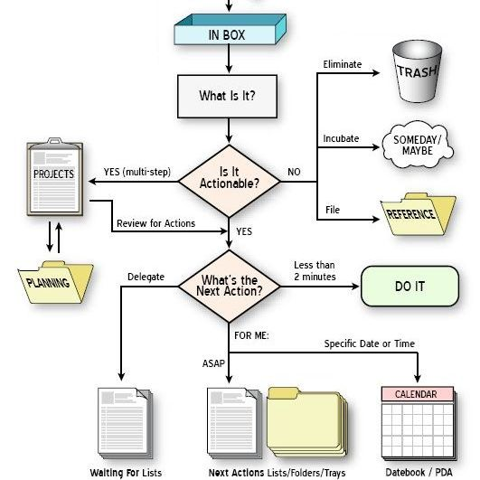

We have heard about code, libraries, infrastructure, processes... but
What about you?
What about us?
Maybe... the major problems of systems work are not so much technical as sociological.
(DeMarco & Lister, 1987)
In this session we will talk about:
That continues today
(Frederick Taylor, 1911)

Up/Down social break
"I don't Pay You to Think"
Hardly adaptable to change
Functional departments, especialization, Time & Planification (waterfall model)
Comunication issues
People as Interchangeable Resources
Are they?
Number of hours in front of your desktop, lines of code, commits...
No one leaves the office before the boss does
The team is not doing their work properly

Strict & Clear phases, Especialization, One Process
Requirements → Design → Build → Testing → Release
Doesn't it sound great?
Meh...
Make People Awesome
(Collins, 2001)

| 1 | Ambition & Humility | Us over Me |
| 2 | First Who a then What | The Right People |
| 3 | Confront Grim Reality | Recognize, Face it |
| 4 | Clear strategy | Best Skills, Economy core, Passion |
| 5 | Discipline culture | Spirit, Innovation, Flexibility, Responsability.. |
| 6 | Technology accelerators | Managed by strategy |
| 7 | Constancy | Inertia |
(McConnell, 1996)

Creativity, Motivation, Invidividual Skills, Communication
Open to change, not clear specifications, what does the client need?

Anything that has to do with the role of people:
developer productivity, teamwork, group dynamics, the psychology of programming, project management, organizational factors, human interface design, and human-machine interaction...
The three core aspects of computer technology are: hardware, software and peopleware.
But... How do we Make People Awesome?
The Eye of the Tiger
(McGregor, 1957)
| The X Theory | The Y Theory |
|---|---|
| Passive, Avoid Responsability, Need to be Managed, No Ambition | Responsable, Participative, Self-Management |
| Persuade, Reward, Punish, Control | Delegate, Decentralize, Trust, Facilitate, Evaluate |
Salary → Environment → Relationships → Self-Esteem* → Reputation*...

| Extrinsic | Intrinsic |
|---|---|
| Punishment & Rewards | Mission Fulfillment |
| The outcome that will result by doing the task | The interest and enjoyment in the task itself |
| Promotions, Pay raises, Bonuses, Benefits, Prizes, Winning, Perks | Enjoyment, Purpose, Growth, Curiosity, Passion, Self-expression, Fun |
Concerns about extrinsic motivation
Soma Cube Experiment by Eduard Decí, 1969
| Group A | Group B | |
|---|---|---|
| 1 | = | = |
| 2 | ↑ | = |
| 3 | ↓ | = |
(Six Rules for Rewards - Jurgen Appelo, 2011)
Example: Kudo Box

Are we stronger together or alone?
How we do create a the perfect team?
One for all and all for one
Adaptative Complex System compound by different agents
Interacted, interconnected, organized (self)
Adapt, compete & colaborate: objetive
Sinergy, different visions (Planning Poker*)
How do we select each member?
Management , Testing , DevOps , Frontend , Backend , Site-Building... What else?

| Management | Testing | DevOps | Frontend | Backend | Site-Building | |
|---|---|---|---|---|---|---|
| Daenerys | ✖ | ■ | ■ | ■ | ||
| Jon Snow | ■ | ✖ | ■ | ✖ | ■ | |
| Arya | ✖ | ✖ | ||||
| Cersei | ✖ | ■ | ■ | ■ | ||
| The Hound | ■ | ■ | ✖ | |||
| ☠ | ☠ |
Great, I've selected the right people
Do I have a team now?
(Tuckman, 1965)

| Stage | Manager | Team | |
|---|---|---|---|
| 1 | Forming | Direct & establish clear objetives | Find your place |
| 2 | Storming | Coach in assetiveness, Resolve conflicts | Improve Relationships |
| 3 | Norming | Step back | Agree own rules |
| 4 | Performing | Delegate | Take responsibility |
It looks great! But...
Will they be able to manage themselves?
The default way of management in nature
Adaptative Complex System
"But do we need managers anyway, with all these self-steering teams nowadays? Management 3.0 believes management is the responsibility of everyone."
"It is like software testing... Depending on your organization you maybe need specialized people with a focus on management."
Jurgen Appelo
"Follow my rules, I'm the one who thinks here!"
Strict Control

"Oh my lord, what do you need?"
Powerless
"Enjoy, have fun, and take responsibility"
Rules, Limits, Actions
Do I need to delegate everything to the team?
Autonomy with alignment increases motivation, quality and also fast releases.
The River Problem

Praveen Kumar Purushothaman - My Experience on Spotify Agile Methodology
(simetric)
| Manager decisions | = | Team decisions | ||||
|---|---|---|---|---|---|---|
| ⮜⮜⮜ Tell | ⮜⮜ Sell | ⮜ Consult | Agree | Advise ⮞ | Inquire ⮞⮞ | Delegate ⮞⮞⮞ |
| No explanation | Try to convince | Ask first | Accord | Try to convince | Ask first | No explanation |
Examples
| Hire new member | Consult |
| IDE | Delegate |
| Project Tracking Software | Agree |
| Workflow | Inquire |
| Backup policy | Advise |
| ... | ... |
The Team is ready, How can I measure its productivity?
OK! ...in order to help them
More hours ≠ more work done
Work (properly) Done / Effort & Resources
Increasing productivity by removing Waste
- Examples -
Unmaintained, nobody will read it.
No Agenda, No Goals, No Actions

Resources are limited.

Kills entrepreneurial spirit: creativity, flexibility, initiative, teamwork, self-confidence, and critical thinking.
Same approach, Same results


Bugs alters planning

Comunication can be an issue

Increasing productivity by team actions
- Examples -
One piece continuous flow.
Kanban: WIP (work in progress) limit.
(Kinberg, 2007) - Swarming applied
Increasing productivity by individual actions
- Examples -
(Francesco Cirillo, 1980s)
Work per intervals of 25 minutes (focused) + 5 min relax
(David Allen, 2001)
So... we have the team motivated, balanced & self-organized.
Can I go to sleep?
Nope!
Kaizen (改善) - change for better

"If it works do not change it!"
someone will do it better soon or later...
Company Culture, CI Tools

Niko-Niko Calendar (async)


One 2 One Meetings (sync)

Team Name ≠ project name
Implement your own Gamification strategies.
And avoid leaderboards, rankings and badges.
Our team fight against Zombies, Orcs & Dragons


...